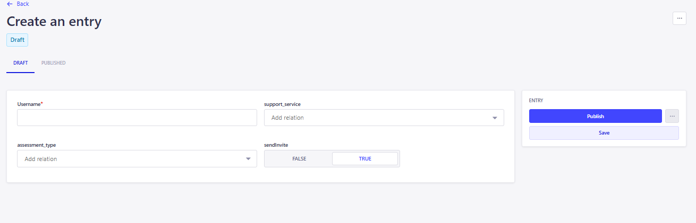
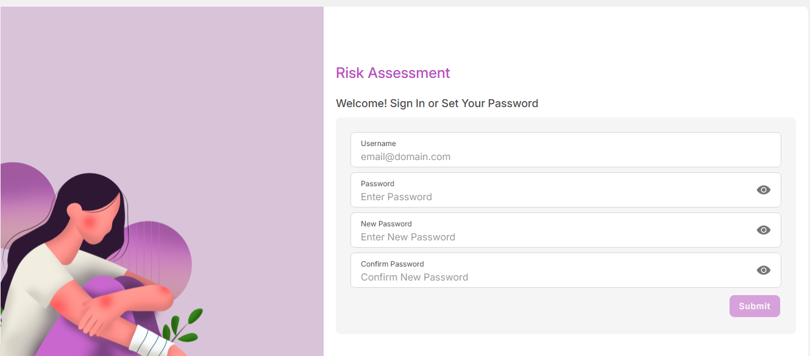

<link rel="stylesheet" href="../css/styles.css">
 
<main>
        <h2>New User</h2>
        <h4><b><u>Admin Registers a New User</u> </b></h4>  
    <p> 
          1. Admin needs to open the CMS site  
          <a target="_blank" href=https://cma-strapi-app-heecd3e6bwczakfu.eastus2-01.azurewebsites.net/admin/auth/login>Admin login</a> <br>
          2. Open the Content Manager from the left menu.<br>
          3. Navigate to User login menu.<br>
          4. Click on Create new entery.<br>
          5. Admin needs to fill details such as Username, SendInvite = true, assessment_type, and support_service. <br>
          6. Password field should left empty.<br>
          7. temp_password field will set the default password initially.<br>
          8. Click on Publish.<br>
    </p>   
        
    <h4><b><u>User Login</u> </b></h4>  
    <p>
        1. The User will receives the invitation mail.<br>
        2. The mail will contains the following fields such as Username,temp_password and the Sign-in page link.<br>
        3. The User needs to click on the link.<br>
        4. Welcome sign page will appear.   <br>     
          <br>
        5. The User need to enter the username,temp_password, New Password and Confirm Password.<br>
        6. Click on Submit.<br>
        7. The Confirmation pop up will appear.<br>
        8. The user will redirect to the login page.<br>
        9. The update Password email will sent to user.<br>
    </p>
   
</main>